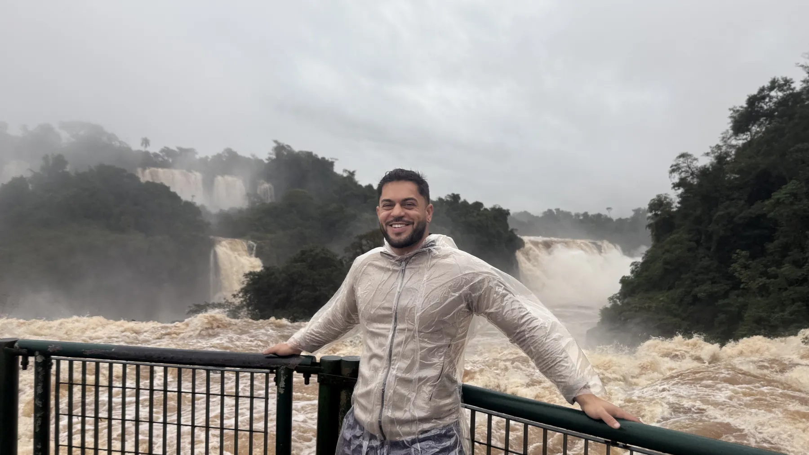
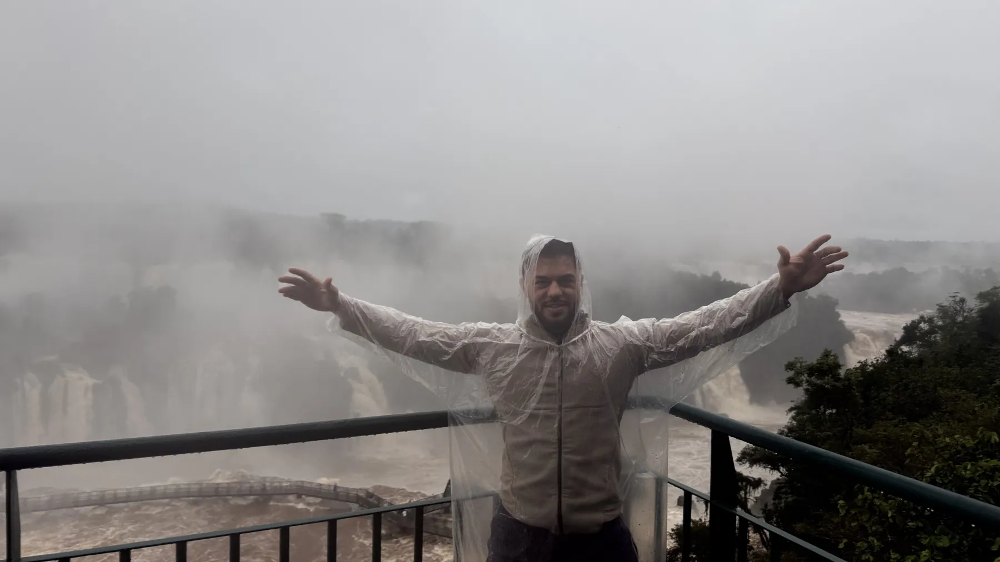
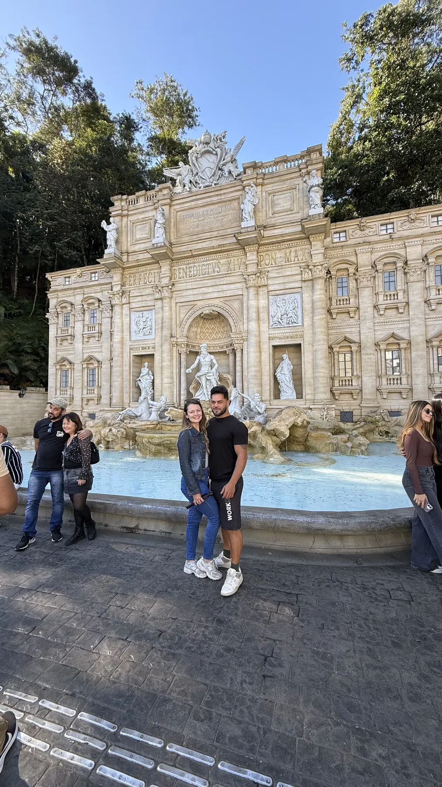
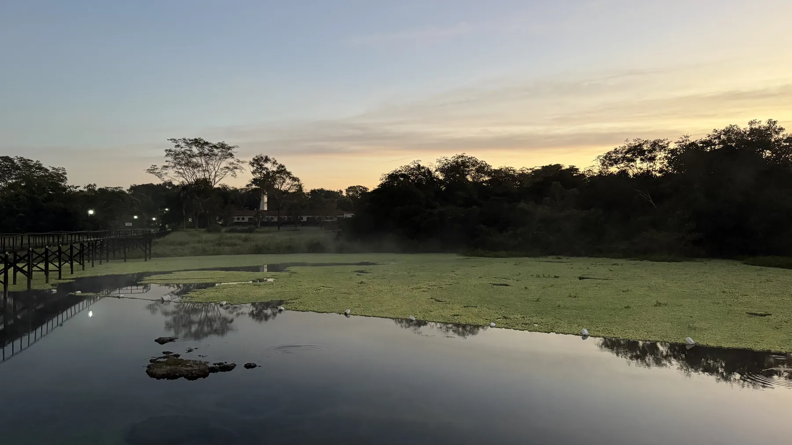
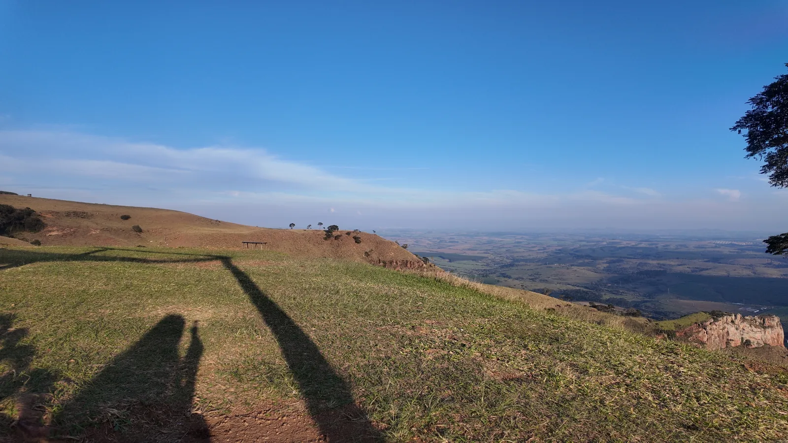
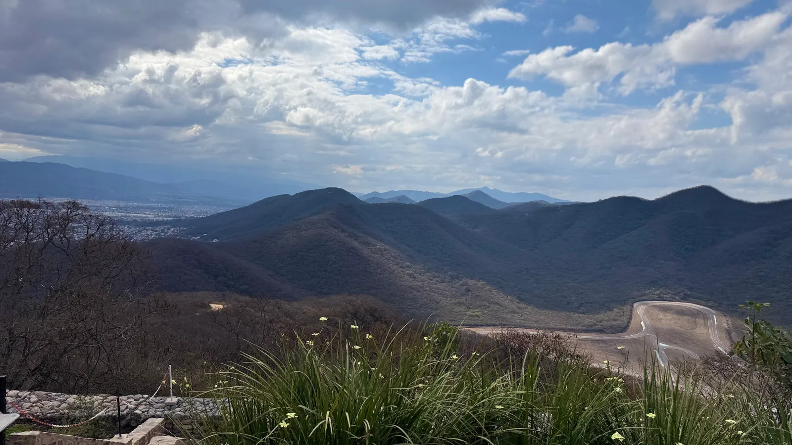

Brasil
Foz do Iguaçu, o interior de São Paulo e Goiás: os lugares que visitamos, com preços, horários e o vídeo de cada um.
Foz do Iguaçu
Paraná
Cataratas do Iguaçu
O lado brasileiro do parque, com a trilha e a passarela perto da Garganta do Diabo.
- R$ 121 residentes no Brasil
- R$ 134 geral
- Até 6 anos grátis
- Abre às 9h

Itaipu por dentro
Visita à usina binacional. A Panorâmica roda o dia todo; o Circuito Especial tem vagas limitadas.
- Panorâmica R$ 63
- Especial R$ 185
- 8h15 às 17h
Foz do Iguaçu em 1 dia: Itaipu + Cataratas
A ordem dos passeios que funcionou para nós, gastos, horários e checklist, em 8 páginas.
Interior de São Paulo

Serra Negra
Passear pelo centro é de graça; algumas atrações cobram entrada.
- Centro grátis

Disneylândia dos Robôs
Parque de robôs em Serra Negra.
- R$ 40 inteira
- R$ 20 meia
- Cartão e PIX
- 9h30 às 17h30, fecha às terças

Pôr do sol no Morro do Fogão
Mirante em Itirapina com um dos pores do sol mais bonitos do interior. Vá no fim da tarde.
- Grátis
- Camping liberado

Águas de São Pedro
A fonte municipal no centro tem água mineral de graça. Leve uma garrafinha.
- Fonte grátis
Goiás

Lagoa Santa
Lagoa de águas termais. Hóspedes do Hotel Thermas entram de graça; o day use é pago (confirme o valor).
- Day use pago
Quer um destino perto de você?
Coloque sua cidade e o raio que topa dirigir: o QuickTrip sugere bate-voltas e fins de semana com passeios, hospedagem e custo de combustível.
Mais da estrada
Histórias do caminho
Casa de Santiago

Experiência no Speed Park

Resgate de um jabuti na estrada
Próximo destino
Foz do Iguaçu em 1 dia: dá para ver Cataratas e Itaipu?
Dá, sim. Horários, ingressos e o que saber para encaixar os dois passeios no mesmo dia.
Ler →
Morro do Fogão, em Itirapina: acampar de graça e ver o pôr do sol
Como chegar saindo de Rio Preto, pedágios, estrutura e as regras para acampar no alto do morro.
Ler →
Da Argentina ao Atacama de carro: nosso roteiro
Roteiro parada por parada pelo norte argentino até San Pedro de Atacama.
Ler →